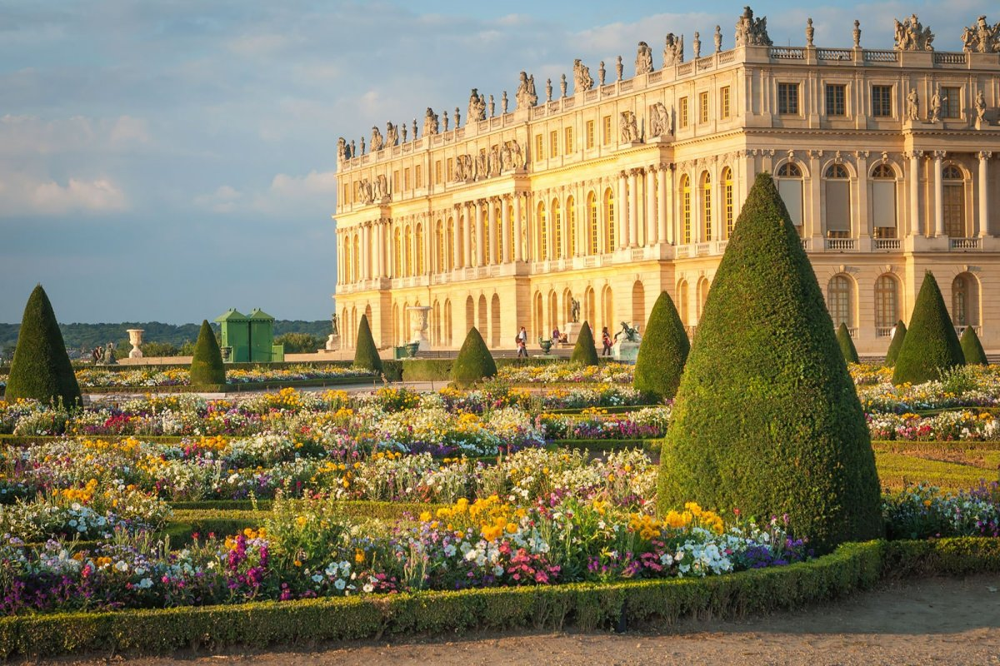

 Верса́ль — дворцово-парковый ансамбль во Франции, бывшая резиденция французских королей в городе Версаль, ныне являющемся пригородом Парижа; центр туризма мирового значения. Версаль сооружали многие выдающиеся французские художники — архитекторы, скульпторы и живописцы — по велению Людовика XIV с 1661 года, и этот ансамбль стал выдающимся памятником эпохи «большого стиля», «золотого века» французского искусства второй половины XVII столетия. Ведущие архитекторы — Луи Лево и Жюль Ардуэн-Мансар, создатель парка — Андре Ленотр. Ансамбль Версаля, крупнейший в Европе, отличается уникальной целостностью замысла и гармонией архитектурных форм и преобразованного природного ландшафта. С конца XVII века Версаль служил образцом для парадных загородных резиденций европейских монархов и аристократии. С 1682 по 1789 годы, до Великой французской революции, Версаль являлся официальной королевской резиденцией. В 1801 году получил статус музея и открыт для публики; с 1830 года музеем стал весь архитектурный комплекс Версаля; в 1837 году в королевском дворце открылся Музей истории Франции. В 1979 году Версальский дворец и парк включены в список всемирного культурного наследия ЮНЕСКО. С Версалем связано множество значимых событий французской и мировой истории. Так, в XVIII веке королевская резиденция стала местом подписания многих международных договоров, в том числе договора, завершившего Войну за независимость США в 1783 году. В 1789 году работавшее в Версале Учредительное собрание приняло Декларацию прав человека и гражданина. В 1871 году, после поражения Франции во Франко-прусской войне, в Версале, оккупированном германскими войсками, было провозглашено создание Германской империи. Здесь же в 1919 году был подписан мирный договор, завершивший Первую мировую войну и положивший начало так называемой Версальской системе — политической системе послевоенных международных отношений.